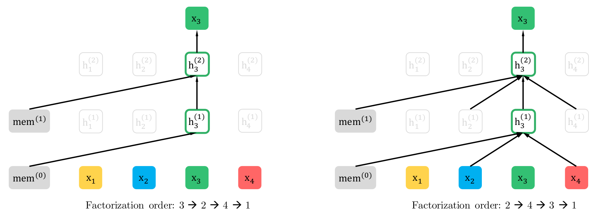
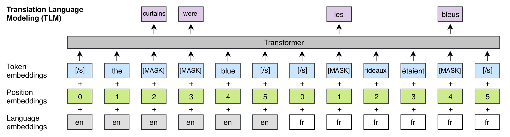
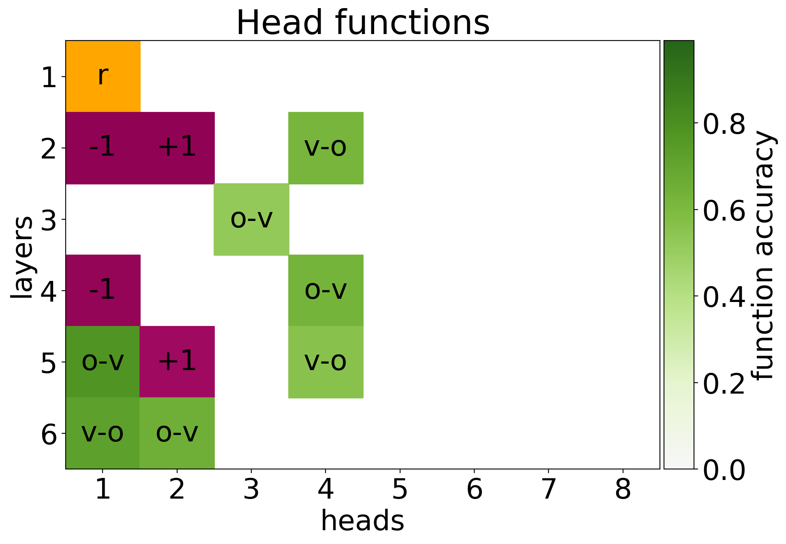
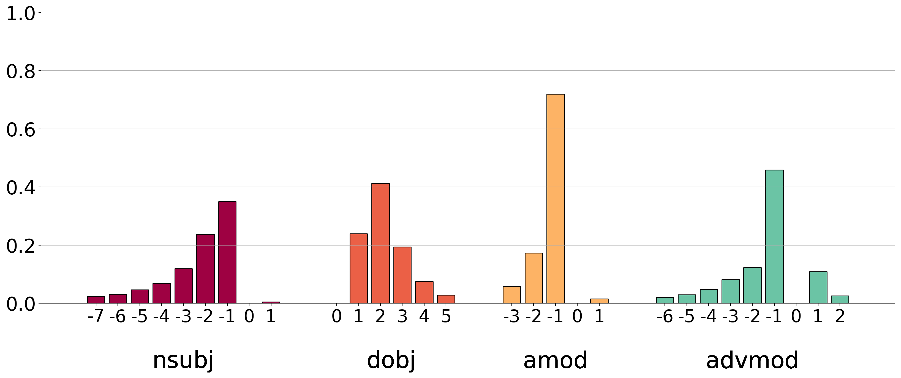
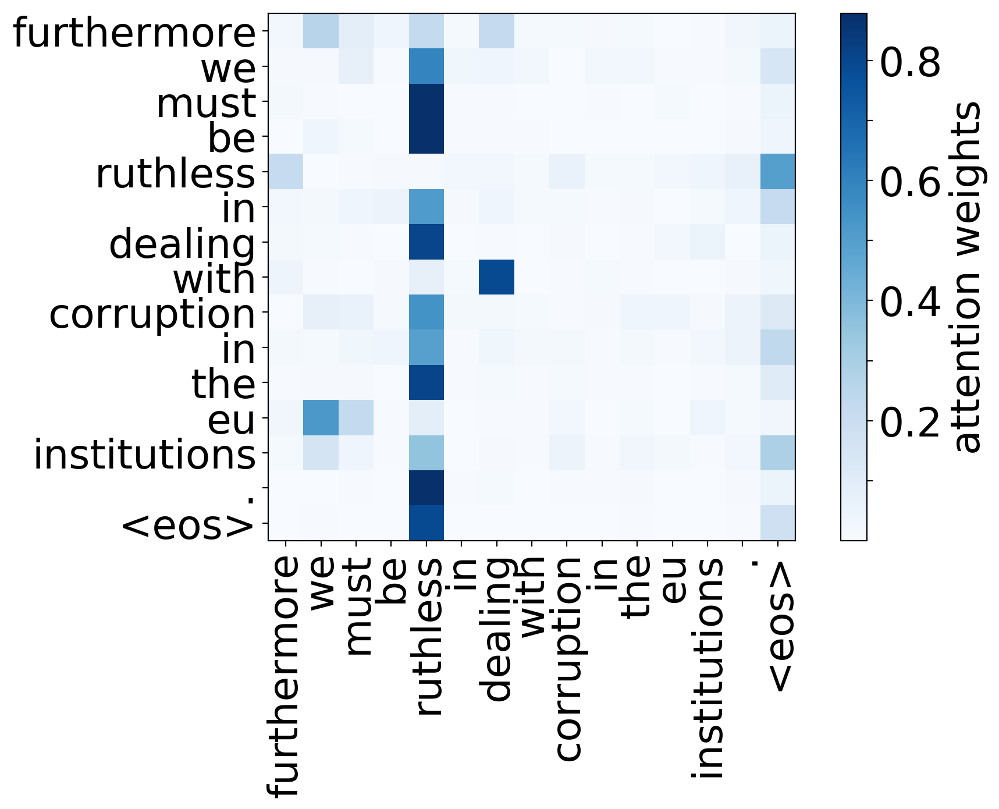

$$\DeclareMathOperator*{\argmax}{arg\,max}
\newcommand{\r}[1]{\color{red}{#1}}
\newcommand{\b}[1]{\color{blue}{#1}} \newcommand{\t}[1]{\text{#1}}$$
Faisons connaissance avec les Transformeurs
Bert, Albert, Roberta…
NMLM du 3 février 2020
Votre speaker
Hugo Mougard, freelance ML
Plan
- Séquence à séquence
- Pré-entraînement
- Extensions
- Transformologie
- Conclusion
Séquence vers séquence
Ou comment on a modélisé $p(\r{t}|\b{s})$ ces dernières décennies
Séquence vers séquence
Objectif
$$\b{s = [\text{Je}, \text{suis}, \text{un}, \text{geek}]}$$ $$\r{t
\in \{[\text{I}, \text{am}, \text{a}, \text{geek}], [\text{I},
\text{am}, \text{a}, \text{dragon}]\}}$$ Trouver
$\argmax_\color{red}{t} p(\color{red}{t}|\color{blue}{s})$
Séquence vers séquence
seq2seq > modèle enroulé
$\b{s}$ est encodé dans un vecteur.
Ce vecteur sert à décoder $\r{t}$.
Séquence vers séquence
seq2seq > modèle déroulé
Séquence vers séquence
seq2seq > conclusion
Un seul vecteur pour représenter $\b{s}$, que $\b{s}$ soit :
- courte ou longue
- avec un mot important ou plusieurs
- facile ou dure à comprendre
- …
Séquence vers séquence
seq2seq + attention
Combinaison des $\b{s_i}$ pour représenter $\b{s}$ à
chaque étape
du decoding.
Séquence vers séquence
seq2seq + attention
Mécanisme de combinaison des $\b{s_i}$.
Séquence vers séquence
seq2seq + attention
Utilisation pendant le decoding.
Séquence vers séquence
seq2seq + attention > visualisation
Séquence vers séquence
seq2seq + attention
-
meilleure représentation de $\b{s}$ pendant le decoding.
-
même représentation de $\b{s}$ pendant l'encoding.
-
même représentation de $\r{t}$ pendant le decoding.
Séquence vers séquence
Transformeurs
Améliorer ces deux derniers points avec de l'attention.
But par rapport à seq2seq :
-
meilleure représentation de $\b{s}$ pendant le decoding.
-
meilleure représentation de $\b{s}$ pendant l'encoding.
-
meilleure représentation de $\r{t}$ pendant le decoding.
Pré-entraînement
Objectif
Faciliter un entraînement futur avec un premier entraînement
- sur beaucoup de données
- qui « transfère » bien
Pré-entraînement
En NLP, généralement :
- Tâche
- Modèle de langue (prédire le mot suivant)
- Données
- Wikipedia, Common Crawl, …
- Taille
- > 100 Go < 1To
Pré-entraînement
Deux types de modèles de langue
- Causal
- Prédiction d'un mot à partir des mots d'avant
- Masqué (débruitage)
- Prédiction des mots masqués dans l'input
Pré-entraînement
Modèle de langue causal
Étant donné « I know », prédire le mot suivant
(« him » par exemple).
Pré-entraînement
Modèle de langue à masques
Étant donné « I know [MASK]. », prédire le mot masqué
(« Kung-Fu » par exemple).
Pré-entraînement
Historiquement
- Pré-entraînement seulement sur les word-embeddings
- Puis sur des RNNs bi-directionnels
Pré-entraînement
État de l'art
BERT
Extensions
Taille et performance
Extensions > Taille et performance
Deux modifications
- découplage des états cachés et des embeddings
- utilisation des mêmes poids dans chaque layer
Extensions > Taille et performance
- Entraînement d'un « étudiant »
- Tâche : reproduire l'output de BERT
- Seulement la moitié des paramètres
- 97% des performances sur GLUE
-
Signal : les probabilités émises par BERT (et non les labels)
Extensions > Entraînement
Très légères modifications :
- Création dynamique des masques d'entraînement
- Pas de pré-tokenization, 50k sous-mots au lieu de 30k
- grands batches
Extensions > Entraînement
Modèle de langue causal avec modification de la factorisation de
$\r{t}$. Au lieu de :
$$p(\r{t}|\b{s}) = \Pi p(\r{t_i} | \r{t_{j < i}}, \b{s})$$
L'ordre change à chaque fois.
Extensions > Entraînement

Extensions
Multilinguisme
Extensions > Multilinguisme
Introduit un objectif cross-lingue en plus de modèles
monolingues :

Extensions > Français
- Utilise RoBERTa
-
Sur 24 datasets différents (Wikipedia, Common Crawl, WMT19) : 71
Go.
Extensions > Français
- Utilise RoBERTa
-
Sur un sous-ensemble français de Common Crawl (OSCAR) : 138 Go.
Transformologie
Étude des transformeurs
But : débugger, comprendre, améliorer.
Transformologie
Trouver la fonction des têtes d'attention :
- Positionnelle
-
Regarde > 90% du temps à $p + 1$ ou $p - 1$
- Syntaxique
-
Regarde souvent une relation syntaxique
- Sémantique
-
Regarde toujours le mot le plus rare
Transformologie
Résultat :

Transformologie
Calcul des têtes syntaxiques par rapport à une baseline :

Transformologie
Mots rares/têtes sémantiques :

Transformologie
Et pour le futur…
Domaine en pleine expansion, but : interprétabilité et
compréhension des modèles.
Conclusion
-
Modéliser $p(\r{t}|\b{s})$ plus finement avec les transformeurs
- Les appliquer au pré-entraînement pour le NLP
- …
- Profit